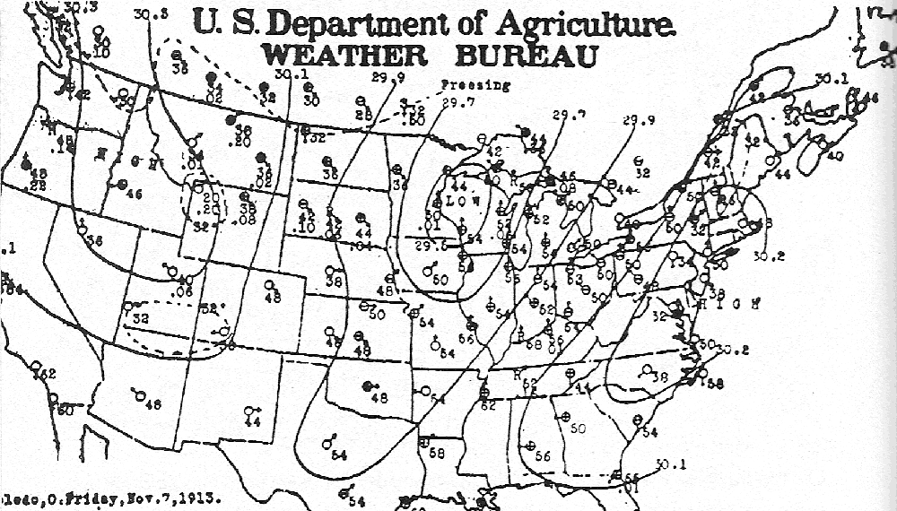
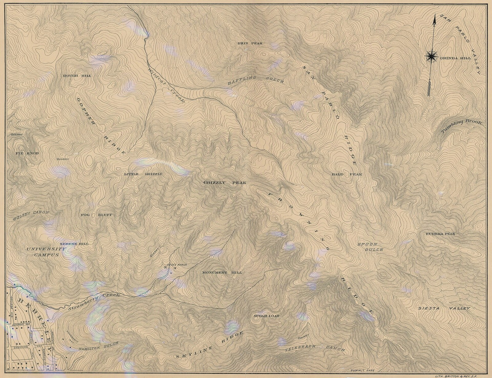

第23回
風の向きと強さが、砂の面に縞として残る。
James St. John（2012年、米国オレゴン砂丘の風紋）／CC BY 2.0／Wikimedia Commons（横長に切り出した）
第11・12回の $f(x,y)$ を、「平面（空間）の点ごとに数が決まっている」と読み直すと、地形・温度・風の話になる。この回は、その場の上で「どちらへ進むとどれだけ変わるか」（方向微分）を求め、方向に依存しない部分をベクトルにまとめた勾配 $\nabla f$ を定義する。勾配が「いちばん増える向き」を指し、等位線（等高線）に直交することを、内積と連鎖律だけで証明する。
第1回から続く約束どおり、新しい記号は緑色の枠（記号）で「①読み方 ②日本語での意味 ③省略していない書き方 ④どこで出会うか」を書く。この回は、第12回6節で予告だけした勾配 $\nabla f$ を、証明つきで正式に定義し直す回である。第12回の連鎖律・全微分、第5回の内積、第19回の「なす角」を、使うたびにリンクで戻れるようにしてある。
各節は、「なぜ必要か → 定義 → 数値で一度手を動かす → 導出 → 確かめ → よくある誤解」の順に進む。高校・1年で習った内容も、短く一度は書く。覚えている部分は飛ばしてよい。
この回の数値例は、ほぼすべて同じ関数 $f(x,y)=x^2+2y^2$ と同じ点 $(2,1)$ で通す。計算が変わらないので、新しい概念だけに集中できる。
最初に、この回で新しく説明する記号と、前の回で説明済みの記号を分けて並べる。右の列の「→」で説明のある場所へ飛べる。
| 記号 | 読み方 | ざっくりした意味 | 説明 |
|---|---|---|---|
| 場（スカラー場・ベクトル場） | ば（スカラーば・ベクトルば） | 空間の点ごとに、数（またはベクトル）が1つ決まっているもの | →1.1 |
| $\boldsymbol r=(x,y,z)^{\mathsf T}$（位置ベクトル） | アール | 原点から点までの矢印。点の名前としても使う | →1.1 |
| $\{\boldsymbol p\mid f(\boldsymbol p)=c\}$（等位集合、等位線・等位面） | とういしゅうごう | $f$ の値が $c$ になる点を全部集めたもの（地図の等高線） | →1.3 |
| 場の書き方の省略の段階（S0〜S3） | ― | $f\colon D\to\mathbb R$ から $f$ だけまでの4段 | →1.4 |
| $D_{\boldsymbol u}f(\boldsymbol a)$（方向微分） | ディー・ユー・エフ | 点 $\boldsymbol a$ から、長さ1の向き $\boldsymbol u$ に進んだときの変化率 | →2.3 |
| $\nabla f$、$\operatorname{grad}f$（勾配） | ナブラ・エフ、グラッド・エフ | 各変数での偏微分を縦に並べたベクトル | →3.2 |
| $\nabla$（ナブラ） | ナブラ | 「各変数で偏微分して並べる」という命令を表す記号 | →3.2 |
| $\boldsymbol n$（法線ベクトル） | ほうせんベクトル | 線・面に直角なベクトル | →3.8 |
| $\phi$（ポテンシャル） | ファイ | $\boldsymbol F=-\nabla\phi$ となる元のスカラー場 | →4.2 |
| $\eta$（学習率）、勾配法（予告） | イータ | 勾配と逆向きに一歩ずつ進む最適化の方法の歩幅 | →4.3 |
| 記号 | 意味 | 初出 |
|---|---|---|
| $:=$、$=$、$\approx$ | 左の名前を右の式で決める／等しい／ほぼ等しい | 第1回 2.2、2.1、2.4 |
| $\in$、$\{x\mid\cdots\}$（集合の内包表記）、$\mathbb R$ | 要素である／条件を満たすものの集まり／実数全体 | 第2回、第2回、第2回 |
| $\forall$、$\exists$ | すべての／存在する | 第2回、第2回 |
| $f\colon A\to B$、定義域、$f(x,y)$（多変数関数）、$F(x,y)=0$（陰関数） | 関数、入力の集まり、入力が複数の関数、式のまま与える関数 | 第3回、第3回、第3回 6.1、第3回 6.2 |
| 引数の省略の段階 $\psi(x,t)\to\psi$ | どの変数の関数かを書かない省略 | 第3回 7.1 |
| 太字ベクトル $\boldsymbol a$、成分 $a_i$、零ベクトル、ノルム $\|\boldsymbol a\|$、単位ベクトル | 数の組、その中の数、長さ、長さ1のベクトル | 第5回、第5回、第5回 6.1、第5回 6.2 |
| 内積 $\boldsymbol a\cdot\boldsymbol b$ | 成分どうしを掛けて足した数 | 第5回 7.2 |
| $\lim$、連続 | 極限、つながっている | 第6回、第6回 |
| $\dfrac{df}{dx}$（導関数）、$f'(a)$、接線の傾き | 1変数の微分 | 第7回、第7回 |
| $\Delta x$、1次近似 | 変化量、接線で置き換える近似 | 第7回、第8回 |
| $\dfrac{\partial f}{\partial x}$、$f_x$（偏微分）、固定の省略 | 他の変数を止めて1つだけ動かした微分 | 第11回 2.1、第11回 3.1、第11回 4.2 |
| 高階偏微分と順序交換 | $f_{xy}=f_{yx}$（連続なら） | 第11回 5.1 |
| 全微分 $df$、連鎖律、中間変数 | 同時に動いたときの変化／合成の微分 | 第12回 2.4、第12回 3.3、第12回 3.1 |
| 陰関数の微分 $\dfrac{dy}{dx}=-\dfrac{F_x}{F_y}$ | $F(x,y)=0$ から接線の傾きを求める | 第12回 5.2 |
| $\nabla f$（勾配、予告） | $f_x,f_y$ を並べたベクトル（この回で正式に定義） | 第12回 6.1 |
| なす角 $\theta$、コーシー・シュワルツの不等式、直交、正規直交基底 | 内積から決まる角、$\lvert\boldsymbol a\cdot\boldsymbol b\rvert\le\|\boldsymbol a\|\|\boldsymbol b\|$ | 第19回 2.4、2.2、3.1、4.1 |
PHOTO 1｜現実

地図の点ごとに、気圧や気温の数が書き込まれた、天気図である。
米国農務省気象局の天気図（1913年11月7日。作者は Commons に記載なし）／Public domain／Wikimedia Commons（縮小した）
第11回と第12回では、$f(x,y)$ を「2つの数 $x,y$ を入れると数が1つ出る関数」として扱った。同じ式を、別の目で読む。平面の点 $(x,y)$ を1つ指定すると、その点に数が1つ決まっている、と読むのである。
身近な例を挙げる。
温度や標高のように「点ごとに数が決まっている」ものと、風のように「点ごとにベクトルが決まっている」ものに、共通の名前をつける。
①読み方：「ば」。英語では field（フィールド）。「温度の場」「速度の場」のように、量の名前をつけて言う。
②日本語での意味：空間（または平面）の点ごとに、数またはベクトルが1つずつ決まっているもの。空間のどこにいても値が読める、という状態をまとめて呼ぶ名前。
③省略していない書き方：$D$ を空間（$\mathbb R^3$）または平面（$\mathbb R^2$）の部分集合（定義域）とする。場とは、$D$ の各点 $\boldsymbol p$ に、ただ1つの値を対応させる関数のことである。値が数ならスカラー場、ベクトルならベクトル場と呼ぶ（下の2つの枠）。
④どこで出会うか：温度分布・圧力分布（熱力学）、流れの速度（流体力学）、電場・磁場（電磁気学）、重力場（力学）、画像の明るさ（画像処理）、損失関数の地形（最適化）。
①読み方：「スカラーば」。
②日本語での意味：点ごとに数が1つ決まっている場。温度、標高、圧力、電位など。
③省略していない書き方：$f\colon D\to\mathbb R$（第3回の関数の書き方）。$D\subset\mathbb R^3$ なら、点 $\boldsymbol p=(x,y,z)^{\mathsf T}\in D$ に実数 $f(\boldsymbol p)=f(x,y,z)$ を対応させる。「スカラー」は「ベクトルではない、ただの数」という意味である。
④どこで出会うか：第11・12回の $f(x,y)$ は、そのまま2変数のスカラー場である。
①読み方：「ベクトルば」。
②日本語での意味：点ごとにベクトルが1つ決まっている場。風の速度、電場、力の分布など。各点に矢印が立っている絵になる。
③省略していない書き方：$\boldsymbol v\colon D\to\mathbb R^3$。点 $\boldsymbol p=(x,y,z)^{\mathsf T}$ に対して、
$$ \boldsymbol v(\boldsymbol p)=\begin{pmatrix}v_1(x,y,z)\\ v_2(x,y,z)\\ v_3(x,y,z)\end{pmatrix} $$
のように、成分それぞれがスカラー場になっている。平面なら成分は2つ。
④どこで出会うか：第24回（発散と回転）、第25・26回（線積分・面積分・ガウスとストークスの定理）、電磁気学の $\boldsymbol E,\boldsymbol B$。
①読み方：「アール」（太字のアール）。「位置ベクトル」と呼ぶ。
②日本語での意味：原点から点 $(x,y,z)$ まで引いた矢印。点の名前をベクトルで書いたもの。矢印の先の点を指す名前として使うことも多い。
③省略していない書き方：$\boldsymbol r:=(x,y,z)^{\mathsf T}$（縦ベクトル）。その長さ（ノルム）は $r:=\|\boldsymbol r\|=\sqrt{x^2+y^2+z^2}$（細字の $r$）。太字の $\boldsymbol r$ はベクトル、細字の $r$ はその長さ（数）で、別のものである。
④どこで出会うか：電磁気学・力学の $\boldsymbol F(\boldsymbol r)$（位置 $\boldsymbol r$ での力）、極座標・球座標（第13回、第27回）。
位置ベクトルを使うと、場を「点を入れる機械」として書き表せる。スカラー場は $f(\boldsymbol r)$（$\boldsymbol r$ を入れると数が出る）、ベクトル場は $\boldsymbol v(\boldsymbol r)$（$\boldsymbol r$ を入れるとベクトルが出る）である。$f(\boldsymbol r)$ と $f(x,y,z)$ は、同じ関数の2通りの書き方である（$\boldsymbol r=(x,y,z)^{\mathsf T}$ だから）。
場を「点を入れる機械」として描くと図1.1 になる。
最小の具体例を、手を動かして作る。この回を通して使う関数を決める。
$$ f(x,y):=x^2+2y^2 $$
これを、平面の「温度の場」と思う。たとえば（この式の意味を知るための仮想の板として）、原点から離れるほど温度が上がる金属板である。いくつかの点で値を計算する。
① 点 $(0,0)$：$f=0^2+2\cdot0^2=0$。
② 点 $(1,0)$：$f=1^2+2\cdot0^2=1$。
③ 点 $(0,1)$：$f=0^2+2\cdot1^2=2$。
④ 点 $(2,1)$：$f=2^2+2\cdot1^2=4+2=6$。
⑤ 点 $(-2,-1)$：$f=(-2)^2+2(-1)^2=4+2=6$。
点ごとに数が1つ決まっている。これがスカラー場である。碁盤の目の格子点で値を並べて見ると、図1.2 になる。
$f(x,y)=x^2+2y^2$ の値を、格子点ごとに並べると図1.2 になる。
ベクトル場も、数値で一度手を動かしておく。平面のベクトル場を2つ用意する。
例A（回転）：$\boldsymbol v_A(x,y):=\begin{pmatrix}-y\\ x\end{pmatrix}$。
① 点 $(1,0)$：$\boldsymbol v_A=(-0,\ 1)^{\mathsf T}=(0,1)^{\mathsf T}$。真上を向く矢印。
② 点 $(0,1)$：$\boldsymbol v_A=(-1,\ 0)^{\mathsf T}$。左向きの矢印。
③ 点 $(-1,0)$：$\boldsymbol v_A=(0,\ -1)^{\mathsf T}$。真下。
④ 点 $(0,-1)$：$\boldsymbol v_A=(1,\ 0)^{\mathsf T}$。右向き。
右（$x$ 軸の正）から時計と逆回りに、上、左、下と並べると、矢印が原点のまわりを反時計回りにまわっている。原点からの距離 $\sqrt{x^2+y^2}$ が大きいほど矢印は長い（長さ $\|\boldsymbol v_A\|=\sqrt{y^2+x^2}$）。点の位置ベクトルが $(x,y)$ のとき、矢印 $(-y,x)$ は位置ベクトルに直角で、直角の確認は内積で行う：$(x,y)\cdot(-y,x)=-xy+yx=0$（第19回 3.1 の直交）。
例A のベクトル場を、格子点に矢印を立てて描くと図1.3 になる。
例B（湧き出し）：$\boldsymbol v_B(x,y):=\begin{pmatrix}x\\ y\end{pmatrix}=\boldsymbol r$。
① 点 $(1,0)$：$(1,0)^{\mathsf T}$。右向き。
② 点 $(0,1)$：$(0,1)^{\mathsf T}$。上向き。
③ 点 $(-1,-1)$：$(-1,-1)^{\mathsf T}$。左下向き。
どの点でも、矢印は原点から外へまっすぐ向いていて、遠いほど長い。原点から何かが湧き出しているように見える。例A と例B は、同じ「点ごとに矢印」でも、まったく違う顔をしている。どう違うかを式で測る道具（発散と回転）が、次の第24回の主題である。
例B のベクトル場は図1.4 になる。
3次元のスカラー場は、グラフを描くと4次元になってしまう。2次元でも、グラフは曲面になり、紙に正確には描きにくい。そこで、地図の等高線の考えを借りる。標高が同じ点をつないだ線を描けば、山の形が紙の上でわかる。この考えを一般の場に広げる。
①読み方：「とういしゅうごう」。2変数のときは「等位線」（とういせん、地図の等高線）、3変数のときは「等位面」（とういめん）と呼ぶ。式は「$f$ イコール $c$ となる点 $\boldsymbol p$ の集まり」と読む。
②日本語での意味：スカラー場 $f$ の値が、ちょうど $c$ になる点を全部集めたもの。温度の場なら「同じ温度の点を結んだ線（等温線）」、標高の場なら「同じ高さの点を結んだ線（等高線）」。
③省略していない書き方：$f\colon D\to\mathbb R$ と実数 $c$ に対して、
$$ L_c:=\{\boldsymbol p\in D\mid f(\boldsymbol p)=c\} $$
（内包表記：$D$ の点 $\boldsymbol p$ のうち、$f(\boldsymbol p)=c$ を満たすものの集まり。記号 $L_c$ はこの教材での仮の名前。教科書によって $f^{-1}(c)$ などと書く）。
④どこで出会うか：等高線（地図）、等温線・等圧線（天気図、熱力学）、等電位線・等電位面（電磁気学）。第12回の陰関数 $F(x,y)=0$ は、$F$ の等位線 $c=0$ である。
$f(x,y)=x^2+2y^2$ の等位線を求める。
① $c=2$：$x^2+2y^2=2$。両辺を2で割る：$\dfrac{x^2}{2}+y^2=1$。これは楕円で、$x$ 軸方向の半径が $\sqrt2$、$y$ 軸方向の半径が $1$。
② $c=6$：$x^2+2y^2=6$、$\dfrac{x^2}{6}+\dfrac{y^2}{3}=1$。半径は $x$ 軸方向 $\sqrt6\approx2.449$、$y$ 軸方向 $\sqrt3\approx1.732$。点 $(2,1)$ は $4+2=6$ でこの上にある。
③ $c=0$：$x^2+2y^2=0$。$x^2\ge0$、$y^2\ge0$ だから、両方が0の原点だけ。1点に縮む（山頂の点）。
④ $c\lt0$：解なし（左辺は0以上）。等位集合は空になる。
値を等間隔（たとえば $c=2,4,6,8,\dots$）に選んで描くと、図1.5 のようになる。
$f=x^2+2y^2$ の等位線を、値を $2$ ずつ変えて描くと図1.5 になる。
地図の等高線と同じで、線の間隔がせまいところほど、値が急に変わる（崖）。間隔が広いところは、ゆるやか。この性質は、3節で勾配の長さとして式になる。
等位線は「$f$ のグラフ」ではない。グラフ $z=f(x,y)$ は曲面で、等位線はその曲面を水平な平面 $z=c$ で切った切り口を、真上から見て平面に写したものである。値 $c$ は線の上の位置では表せず、「この線は $c$ の線」というラベルで表す。
教科書は、場を非常に短く書く。短い形ほど、何が略されているかを知らないと読めない。第3回の引数の省略と同じ事情だが、ここでは場に特有の段階を並べる。使うときは、以後この表へ戻る。
| 段階 | 書き方（温度の場の例） | 何を省いたか | 省いても誤解が起きない理由／起きる場面 |
|---|---|---|---|
| S0 | $T\colon D\to\mathbb R,\quad \boldsymbol p\mapsto T(\boldsymbol p)$、$D\subset\mathbb R^3$ | （省略なし）。定義域と値の行き先、対応の矢印をすべて書く | ― |
| S1 | $T(x,y,z)$ | 定義域 $D$ と行き先 $\mathbb R$ を書かない。点を成分 $x,y,z$ に分けて書く | 定義域は文脈でわかる（部屋の中、など）。成分で書くので、偏微分を取るときに「どの文字で微分するか」が見える |
| S2 | $T(\boldsymbol r)$ | 点の成分 $x,y,z$ を、位置ベクトル $\boldsymbol r$ 1つにまとめる | $\boldsymbol r=(x,y,z)^{\mathsf T}$ と約束済みなら、S1 に戻れる。ただし座標の取り方（直交座標か極座標か）が隠れる |
| S3 | $T$ | 引数を一切書かない（第3回の引数の省略） | $T$ が場（関数全体）を指すのか、ある点での値（数）を指すのか、文脈で決まる。第12回の省略の段階と同じく、$T$ が時間 $t$ にも依存するか（$\partial T/\partial t$）が見えなくなる |
時間にも依存する場（非定常な場）は、引数に $t$ を加えて $T(x,y,z,t)$ と書く。S2 の形では $T(\boldsymbol r,t)$。第12回の物質微分 $\dfrac{DT}{Dt}$ は、この形の場に対する話だった（第12回 4.6）。
上の表を階段にしたのが図1.6 である（第11回の図3.1 と同じ描き方）。
位置ベクトルや場の太字は、教科書ごとに違う。同じ意味の別の書き方を並べる。
| この教材 | 別の書き方 | 見かける場所 |
|---|---|---|
| $\boldsymbol r$、$\boldsymbol v$（太字） | $\vec r$、$\vec v$（矢印）／板書では $\underline{r}$（下線）／単に $r$、$v$（目印なし） | 物理・電磁気学では矢印が多い。数学の本は目印なしも多い（第5回 2.2） |
| $\boldsymbol v=(v_1,v_2,v_3)$ | $\boldsymbol v=(u,v,w)$、$\boldsymbol v=(v_x,v_y,v_z)$、$\boldsymbol F=(P,Q,R)$ | 流体力学は $(u,v,w)$、数学のベクトル解析は $(P,Q,R)$ が定番 |
| $f(\boldsymbol r)$ | $\phi(\boldsymbol r)$、$U(\boldsymbol r)$、$T(\boldsymbol r)$ | ポテンシャルは $\phi$ か $U$ が慣習 |
文字の選び方は慣習で、意味を決めるのは「それが数か、ベクトルか」と「何の関数か」である。
偏微分 $\dfrac{\partial f}{\partial x}$ は、$y$ を止めて $x$ だけを動かしたときの変化率だった。つまり、$x$ 軸に平行な向きに進む場合の話である。$\dfrac{\partial f}{\partial y}$ は $y$ 軸に平行な向きの話である。
ところが、現実に動く向きは、座標軸とは関係ない。山の斜面を北東へ登るとき、熱い板の上を斜めに歩く虫の足元の温度が変わる速さ、といった問いには、軸方向の偏微分だけでは答えられない。
2つの偏微分から、斜めの向きの変化率を作れるだろうか。第12回の全微分が答えを持っている。しかしその前に、「斜めの向きの変化率とは何か」を、まず定義しなければならない。
点 $(2,1)$ から出る3つの向きを等位線の上に描くと図2.1 になる。
向きを数で指定する方法を決める。向きを表すだけなら、長さは不要のはずである。長さがあると、次のように答えが変わってしまう。
点 $\boldsymbol a=(2,1)$ から、方向 $(1,1)$ に「ベクトルの長さの分だけ」進む場合と、方向 $(2,2)$ に進む場合を考える。向きは同じだが、$(2,2)$ のほうが2倍遠くへ進む。進んだ距離が違えば、$f$ の変化も違う。変化率（「1 進むあたりの変化」）を比べたいのだから、進む距離のものさしをそろえる必要がある。そろえ方が「長さ1のベクトル」である。
長さ1のベクトル（単位ベクトル）は、角度 $\alpha$ を使うと、平面では次のように書ける。
$$ \boldsymbol u=\begin{pmatrix}\cos\alpha\\ \sin\alpha\end{pmatrix},\qquad \|\boldsymbol u\|=\sqrt{\cos^2\alpha+\sin^2\alpha}=\sqrt1=1 $$
$\alpha=0$ なら $\boldsymbol u=(1,0)^{\mathsf T}$（$x$ 軸の正の向き）、$\alpha=\pi/2$ なら $(0,1)^{\mathsf T}$（$y$ 軸の正の向き）、$\alpha=\pi/4$ なら $\left(\tfrac1{\sqrt2},\tfrac1{\sqrt2}\right)^{\mathsf T}$（北東）である。
任意のベクトル $\boldsymbol v\ne\boldsymbol 0$ から、向きだけを取り出すには長さで割る。$\boldsymbol u:=\boldsymbol v/\|\boldsymbol v\|$。たとえば $\boldsymbol v=(3,4)^{\mathsf T}$ なら $\|\boldsymbol v\|=\sqrt{9+16}=5$ だから $\boldsymbol u=(3/5,\ 4/5)^{\mathsf T}$。確かめ：$\|\boldsymbol u\|=\sqrt{9/25+16/25}=1$。
向きを表すベクトルを長さ $1$ にそろえる理由を、図2.2 に描く。
点 $\boldsymbol a$ から、向き $\boldsymbol u$ に距離 $h$ だけ進んだ点は、$\boldsymbol a+h\boldsymbol u$ である（$\boldsymbol u$ の長さが1だから、進んだ距離がちょうど $|h|$ になる）。そこでの値は $f(\boldsymbol a+h\boldsymbol u)$ で、出発点との差を進んだ距離 $h$ で割れば、「1 進むあたりの変化」になる。$h\to0$ とした極限が、方向微分である。
①読み方：「ディー・ユー・エフ・エー」。「$f$ の、$\boldsymbol a$ における、$\boldsymbol u$ 方向の方向微分」と読む。$\dfrac{\partial f}{\partial\boldsymbol u}(\boldsymbol a)$、$\partial_{\boldsymbol u}f(\boldsymbol a)$ とも書く。
②日本語での意味：スカラー場 $f$ の上で、点 $\boldsymbol a$ から向き $\boldsymbol u$ に（長さ1あたり）進んだときの、$f$ の変化率。符号つきで、正なら増える向き、負なら減る向き、0なら等位線に沿う向きである。
③省略していない書き方：$\boldsymbol u$ を $\|\boldsymbol u\|=1$ のベクトルとして、
$$ D_{\boldsymbol u}f(\boldsymbol a):=\lim_{h\to0}\frac{f(\boldsymbol a+h\boldsymbol u)-f(\boldsymbol a)}{h} $$
この極限が存在するとき、方向微分が存在するという。$h$ は 0 でない実数で、正負どちらから近づいてもよい（第6回の極限）。
④どこで出会うか：山の斜面の傾き、熱流、流体の流れに沿った変化（物質微分は $\boldsymbol u$ 方向の方向微分の一種）、最適化の探索方向。
この定義は、1変数の関数の微分に言い換えられる。点 $\boldsymbol a$ から向き $\boldsymbol u$ の直線に沿った $f$ の値だけを取り出して、新しい1変数関数
$$ g(h):=f(\boldsymbol a+h\boldsymbol u) $$
を作る（$h$ は進んだ距離）。このとき
$$ D_{\boldsymbol u}f(\boldsymbol a)=\lim_{h\to0}\frac{g(h)-g(0)}{h}=g'(0) $$
である。右辺は第7回の「点 0 での微分係数」の定義そのものだから、方向微分は、曲面を直線の真上で切った断面のグラフの、$h=0$ での傾きになる。
点 $\boldsymbol a=(2,1)$ から北東の向き $\boldsymbol u=(1,1)/\sqrt2$ に進んだときの $f$ の値だけを取り出すと、図2.3 になる。
$f(x,y)=x^2+2y^2$、点 $\boldsymbol a=(2,1)^{\mathsf T}$、北東の向き $\boldsymbol u=\dfrac1{\sqrt2}(1,1)^{\mathsf T}$（長さ1）で方向微分を求める。
① $g(h)=f(\boldsymbol a+h\boldsymbol u)=f\!\left(2+\dfrac h{\sqrt2},\ 1+\dfrac h{\sqrt2}\right)$。
② $=\left(2+\dfrac h{\sqrt2}\right)^2+2\left(1+\dfrac h{\sqrt2}\right)^2$。
③ 展開する：$\left(2+\dfrac h{\sqrt2}\right)^2=4+\dfrac{4h}{\sqrt2}+\dfrac{h^2}2$、$2\left(1+\dfrac h{\sqrt2}\right)^2=2+\dfrac{4h}{\sqrt2}+h^2$。
④ 足す：$g(h)=6+\dfrac{8h}{\sqrt2}+\dfrac32h^2=6+4\sqrt2\,h+\dfrac32h^2$。
⑤ 差商：$\dfrac{g(h)-g(0)}{h}=\dfrac{4\sqrt2\,h+\frac32h^2}{h}=4\sqrt2+\dfrac32h$。
⑥ $h\to0$：$D_{\boldsymbol u}f(\boldsymbol a)=4\sqrt2\approx5.657$。
数値で収束のようすを見る。⑤の式 $4\sqrt2+1.5h$ に $h$ を入れる。
| $h$ | $\boldsymbol a+h\boldsymbol u$ | $f(\boldsymbol a+h\boldsymbol u)$ | 差商 $\dfrac{f(\boldsymbol a+h\boldsymbol u)-6}{h}$ |
|---|---|---|---|
| $1$ | $(2.707,\ 1.707)$ | $13.157$ | $7.157$ |
| $0.5$ | $(2.354,\ 1.354)$ | $9.203$ | $6.407$ |
| $0.1$ | $(2.071,\ 1.071)$ | $6.581$ | $5.807$ |
| $0.01$ | $(2.00707,\ 1.00707)$ | $6.05672$ | $5.672$ |
差商は $7.157,\ 6.407,\ 5.807,\ 5.672$ と、$4\sqrt2=5.657\dots$ に近づく。⑥と合う（）。
2.4 の表の差商を $h$ に対して並べると、図2.4 になる。
$\boldsymbol u=\boldsymbol e_1=(1,0)^{\mathsf T}$（$x$ 軸の正の向き）を入れる。$\boldsymbol a+h\boldsymbol e_1=(a_1+h,\ a_2)$ だから、
$$ D_{\boldsymbol e_1}f(\boldsymbol a)=\lim_{h\to0}\frac{f(a_1+h,\ a_2)-f(a_1,\ a_2)}{h}=\frac{\partial f}{\partial x}(\boldsymbol a) $$
右辺は第11回の偏微分の定義そのものである。同じく $\boldsymbol e_2=(0,1)^{\mathsf T}$ なら $\dfrac{\partial f}{\partial y}$。つまり、偏微分は方向微分の特別な場合（座標軸の向き）である。数値でも、$f=x^2+2y^2$、点 $(2,1)$ で $f_x=2x=4$、$f_y=4y=4$。
逆向きの確かめもする。$\boldsymbol u\to-\boldsymbol u$ とすると、$g(h)=f(\boldsymbol a-h\boldsymbol u)=g_{\text{元}}(-h)$ だから、傾きの符号が反転する：$D_{-\boldsymbol u}f=-D_{\boldsymbol u}f$。⑥の例では、南西の向きの方向微分は $-4\sqrt2$。登る向きと降りる向きの変化率は、大きさが同じで符号が逆である。
毎回極限を計算するのは大変である。$g(h)=f(a_1+hu_1,\ a_2+hu_2)$ は、$f$ に $x=a_1+hu_1$、$y=a_2+hu_2$ を入れた、$h$ の1変数関数である。これは第12回の中間変数（$x,y$）をもつ形で、連鎖律が使える。
① $x(h)=a_1+hu_1$、$y(h)=a_2+hu_2$ とおく。
② $\dfrac{dx}{dh}=u_1$、$\dfrac{dy}{dh}=u_2$。
③ 連鎖律：$g'(h)=\dfrac{\partial f}{\partial x}\bigl(x(h),y(h)\bigr)\dfrac{dx}{dh}+\dfrac{\partial f}{\partial y}\bigl(x(h),y(h)\bigr)\dfrac{dy}{dh}$。
④ $h=0$ を入れる：$x(0)=a_1$、$y(0)=a_2$ だから、$g'(0)=\dfrac{\partial f}{\partial x}(a_1,a_2)\,u_1+\dfrac{\partial f}{\partial y}(a_1,a_2)\,u_2$。
⑤ $g'(0)=D_{\boldsymbol u}f(\boldsymbol a)$ だから、
$$ D_{\boldsymbol u}f(\boldsymbol a)=f_x(\boldsymbol a)\,u_1+f_y(\boldsymbol a)\,u_2 \qquad(2.1) $$
これを使うには、連鎖律の前提「$f_x,f_y$ が $\boldsymbol a$ の近くで連続（このとき $f$ は全微分可能：第12回 2.4 の定理）」が必要である。工学で出会う多項式・指数・三角関数の組み合わせは、ふつうこの条件を満たす。
数値で確かめる。2.4 の例：$f_x=2x=4$、$f_y=4y=4$、$\boldsymbol u=(1/\sqrt2,\ 1/\sqrt2)$。$(2.1)$ に入れると $4\cdot\dfrac1{\sqrt2}+4\cdot\dfrac1{\sqrt2}=\dfrac8{\sqrt2}=4\sqrt2$。2.4 の極限の計算と一致した。
① $\boldsymbol u$ が単位ベクトルでなくてもよい：$(2.1)$ に長さ1でないベクトル $\boldsymbol v=(2,2)^{\mathsf T}$ を入れると、$4\cdot2+4\cdot2=16$。単位ベクトル $\boldsymbol v/\|\boldsymbol v\|$ での値 $4\sqrt2$ の $2\sqrt2=\|\boldsymbol v\|$ 倍になる。長さを掛けた分だけ変化率が大きく出てしまう。単位ベクトルにそろえてから入れる。（物理で速度ベクトルを入れて「時間あたりの変化」を出すのは別の話。それは第12回の連鎖律で、$\boldsymbol v$ は進む速さを含む。）
② 偏微分が両方あれば、すべての向きの方向微分も存在する：これは誤りである。第12回 2.7 の $f=\dfrac{xy}{x^2+y^2}$（$f(0,0)=0$）は、原点で $f_x=f_y=0$ だが、$y=x$ の向き $\boldsymbol u=(1,1)/\sqrt2$ では $f(h\boldsymbol u)=\tfrac12$（$h\ne0$）で $f(0,0)=0$ と合わず、差商 $\tfrac1{2h}$ は $h\to0$ で発散する。方向微分は存在せず、連続でさえない。軸方向の偏微分だけでは、斜め方向のようすはわからない。$(2.1)$ が使えるのは、偏導関数が連続なとき（全微分可能なとき）である。
③ 方向微分は「その向きの傾きの大きさ」：符号つきの数である。負なら、その向きに進むと $f$ が減る。
PHOTO 2｜現実

同じ高さの点を結ぶ線は、ゆるい坂では離れ、急な坂では詰まる。
バークレー丘陵の地形図（1900年。W. H. Otis ほか）／Public domain／Wikimedia Commons（縮小した）
MITATE 2｜見立て
水は、いちばん急な向きへ落ちていく。
葛飾北斎『諸国瀧廻り 木曽路ノ奥 阿弥陀ヶ瀧』（Commons の年代は1833年ごろ）／CC BY 4.0／Wikimedia Commons（縮小した）
$(2.1)$ の右辺 $f_x(\boldsymbol a)u_1+f_y(\boldsymbol a)u_2$ は、「$f_x$ と $u_1$ の積」と「$f_y$ と $u_2$ の積」の和である。これは第5回の内積（成分どうしの積の和）の形をしている。そこで2つのベクトルを
$$ \begin{pmatrix}f_x(\boldsymbol a)\\ f_y(\boldsymbol a)\end{pmatrix},\qquad \begin{pmatrix}u_1\\ u_2\end{pmatrix}=\boldsymbol u $$
とおけば、方向微分はこの2つの内積である。左のベクトルは、向き $\boldsymbol u$ には関係なく、場 $f$ と点 $\boldsymbol a$ だけで決まる。向きを選ぶ部分（$\boldsymbol u$）と、場が決める部分（左のベクトル）が、ここで分かれた。左のベクトルに名前をつける。これは第12回 6.1 で予告したものである。
(2.1) の内積を、2本のベクトルの図にすると図3.1 になる。
①読み方：「ナブラ・エフ」「グラッド・エフ」「グラディエント・エフ」。日本語で「$f$ の勾配」。
②日本語での意味：スカラー場 $f$ の、各変数での偏微分を縦のベクトルに並べたもの。点 $\boldsymbol a$ ごとに1つのベクトルが決まるので、$\nabla f$ 自体も（ベクトル）場である。
③省略していない書き方：2変数なら
$$ \nabla f(\boldsymbol a):=\begin{pmatrix}\dfrac{\partial f}{\partial x}(\boldsymbol a)\\[3mm]\dfrac{\partial f}{\partial y}(\boldsymbol a)\end{pmatrix},\qquad \boldsymbol a=(a_1,a_2)^{\mathsf T} $$
3変数なら $\nabla f(\boldsymbol a)=\bigl(f_x(\boldsymbol a),\ f_y(\boldsymbol a),\ f_z(\boldsymbol a)\bigr)^{\mathsf T}$。$n$ 変数なら成分が $n$ 個（$\partial f/\partial x_i$ を $i=1,\dots,n$ について）。
④どこで出会うか：最急上昇の向き（この回）、等位面の法線（この回）、熱流 $\boldsymbol q=-\kappa\nabla T$、電場 $\boldsymbol E=-\nabla\phi$、勾配法（第51回）、ヤコビ行列の1行（第33回）。
①読み方：「ナブラ」。または「デル」「アトレド」。逆三角形の形が古代ギリシャの竪琴（ハープ）に似ていることが名前の由来、と言われる。
②日本語での意味：「各変数で偏微分して、縦に並べよ」という命令を表す記号。後ろに置かれた場に対して働く。数のベクトルではなく、ベクトルの形に並べた偏微分の記号である。
③省略していない書き方：3変数なら
$$ \nabla:=\begin{pmatrix}\dfrac{\partial}{\partial x}\\[2mm]\dfrac{\partial}{\partial y}\\[2mm]\dfrac{\partial}{\partial z}\end{pmatrix} $$
$\nabla f$ は、この3つの成分の「後ろ」に $f$ を置いて、$\dfrac{\partial}{\partial x}f=\dfrac{\partial f}{\partial x}$ のように働かせたものである。
④どこで出会うか：発散 $\nabla\cdot\boldsymbol v$、回転 $\nabla\times\boldsymbol v$、ラプラシアン $\nabla^2$（第24回）、物質微分の $(\boldsymbol u\cdot\nabla)$（第12回 4.6）。
$\nabla$ は数を成分にもつ普通のベクトルではない。成分が「偏微分の命令」なので、順序が重要になる。$\nabla f$（$f$ に偏微分を施す）と $f\nabla$（$f$ を各成分に掛けた、まだ何にも作用していない演算子）は別物である。したがって、$\nabla$ を式の中で勝手に動かして「外に出す」ことはできない。$\nabla$ の後ろに書いたものに対してだけ、微分が働く。
$\nabla f$ と $f\nabla$ の違いを、成分の並びで描くと図3.2 になる。
勾配を使うと、$(2.1)$ は次のように短くなる。
$$ D_{\boldsymbol u}f(\boldsymbol a)=\nabla f(\boldsymbol a)\cdot\boldsymbol u \qquad(3.1) $$
「方向微分＝勾配と向きの内積」。第12回 6.1 では、この式は連鎖律の形（$\dfrac{df}{dt}=\nabla f\cdot\boldsymbol v$、$\boldsymbol v$ は速度）で出てきた。向きの代わりに速度を入れても同じ式になる。
数値例：$f=x^2+2y^2$、$\nabla f=(2x,\ 4y)^{\mathsf T}$。点 $(2,1)$ で $\nabla f=(4,4)^{\mathsf T}$。長さは $\|\nabla f\|=\sqrt{16+16}=4\sqrt2\approx5.657$。向き $\boldsymbol u=(3,4)^{\mathsf T}/5$ での方向微分は $(3.1)$ から $4\cdot\frac35+4\cdot\frac45=\frac{12+16}5=5.6$。
$(3.1)$ の右辺は内積だから、第19回のなす角で書き直せる。$\nabla f(\boldsymbol a)\ne\boldsymbol 0$ のとき、$\nabla f(\boldsymbol a)$ と $\boldsymbol u$ のなす角を $\theta$（$0\le\theta\le\pi$）とすると、
$$ \nabla f\cdot\boldsymbol u=\|\nabla f\|\,\|\boldsymbol u\|\cos\theta=\|\nabla f\|\cos\theta \qquad(\|\boldsymbol u\|=1) $$
$f$ は点 $\boldsymbol a$ の近くで偏導関数が連続とし、$\nabla f(\boldsymbol a)\ne\boldsymbol 0$ とする。長さ1の向き $\boldsymbol u$ が $\nabla f(\boldsymbol a)$ とのなす角 $\theta$ をなすとき、
$$ D_{\boldsymbol u}f(\boldsymbol a)=\|\nabla f(\boldsymbol a)\|\cos\theta \qquad(3.2) $$
(a) $\theta=0$（$\boldsymbol u=\nabla f/\|\nabla f\|$）のとき、方向微分は最大値 $\|\nabla f(\boldsymbol a)\|$。
(b) $\theta=\pi$（$\boldsymbol u=-\nabla f/\|\nabla f\|$）のとき、最小値 $-\|\nabla f(\boldsymbol a)\|$。
(c) $\theta=\pi/2$（$\boldsymbol u\perp\nabla f$）のとき、$0$。
$\nabla f(\boldsymbol a)=\boldsymbol 0$ のときは、すべての向きで $D_{\boldsymbol u}f(\boldsymbol a)=0$。
STEP 1 $(3.1)$ から $D_{\boldsymbol u}f=\nabla f\cdot\boldsymbol u$。内積をなす角で書く（第19回）：$\nabla f\cdot\boldsymbol u=\|\nabla f\|\|\boldsymbol u\|\cos\theta$。$\|\boldsymbol u\|=1$ を入れて $(3.2)$。
STEP 2 $\|\nabla f\|$ は $\boldsymbol u$ によらない正の定数。$\cos\theta$ は、$0\le\theta\le\pi$ で $\theta=0$ のとき最大値 $1$、$\theta=\pi$ のとき最小値 $-1$、$\theta=\pi/2$ のとき $0$（単位円で $\cos$ は $x$ 座標）。したがって (a)(b)(c)。
STEP 3 最大値 $\|\nabla f\|$ を与える $\boldsymbol u$ は、$\theta=0$、すなわち $\nabla f$ と同じ向きの単位ベクトル $\nabla f/\|\nabla f\|$。(b) は $\theta=\pi$ を入れる。$\cos\pi=-1$ で値は $-\|\nabla f\|$、向きは $\nabla f$ と正反対の $-\nabla f/\|\nabla f\|$。
STEP 4 $\nabla f=\boldsymbol 0$ なら $(3.1)$ の内積が $\boldsymbol 0\cdot\boldsymbol u=0$。
数値で確かめる。$f=x^2+2y^2$、点 $(2,1)$。$\nabla f=(4,4)^{\mathsf T}$、$\|\nabla f\|=4\sqrt2$。向き $\boldsymbol u=(\cos\alpha,\sin\alpha)^{\mathsf T}$ を回しながら $(3.1)$ を計算する。
$$ D_{\boldsymbol u}f=4\cos\alpha+4\sin\alpha=4\sqrt2\cos\!\left(\alpha-\frac\pi4\right) $$
（最後の等号は、$\cos\alpha+\sin\alpha=\sqrt2\cos(\alpha-\pi/4)$ という加法定理の結果。右辺を展開すると $\sqrt2\left(\cos\alpha\cdot\frac1{\sqrt2}+\sin\alpha\cdot\frac1{\sqrt2}\right)=\cos\alpha+\sin\alpha$ で一致する）。
| $\alpha$ | 向き | $D_{\boldsymbol u}f=4\cos\alpha+4\sin\alpha$ |
|---|---|---|
| $0$ | 東（$x$ 軸の正） | $4$（$=f_x$） |
| $\pi/4=45^\circ$ | 北東（勾配の向き） | $4\sqrt2\approx5.657$（最大） |
| $\pi/2=90^\circ$ | 北（$y$ 軸の正） | $4$（$=f_y$） |
| $3\pi/4=135^\circ$ | 北西（勾配に直角） | $0$ |
| $5\pi/4=225^\circ$ | 南西（勾配の逆） | $-4\sqrt2$（最小） |
最大値が勾配の向き $\alpha=45^\circ$ で $\|\nabla f\|=4\sqrt2$ になり、直角の向き（$135^\circ$、$315^\circ$）で0になる。(a)(b)(c) と一致する。
向きの角度 $\alpha$ を $0^\circ$ から $360^\circ$ まで回しながら、点 $(2,1)$ での方向微分を描くと図3.3 になる。
「勾配は山頂（極値）の向きを指す」ではない。勾配が指すのは、その点の足元でいちばん急に増える向き（局所的な最急上昇）である。山頂の方向とは一致するとは限らない。実際、$f=x^2+2y^2$ の点 $(2,1)$ の勾配 $(4,4)$ の逆（最急下降）は $(-4,-4)$ で、最小点（原点）へ向かう向き $(-2,-1)$ とは別の向きである。この楕円型の地形では、$y$ 方向のほうが急なため、いちばん急に登る向きが北寄りに曲がる。
3.3 の表で、$\alpha=135^\circ$（勾配に直角）の向きに進むと $f$ が増えも減りもしない。これは、等位線に沿って進んでいるということではないか。実際に確かめる。
点 $(2,1)$ を通る等位線 $x^2+2y^2=6$ の接線の傾きを、第12回の陰関数の公式 $\dfrac{dy}{dx}=-\dfrac{F_x}{F_y}$ で求める。$F=x^2+2y^2-6$、$F_x=2x=4$、$F_y=4y=4$。
① $\dfrac{dy}{dx}=-\dfrac44=-1$。
② 向き $(1,-1)$ と勾配 $(4,4)$ の内積：$4\cdot1+4\cdot(-1)=0$。
つまり、等位線の接線の向きは勾配と直交している。図で見る。
点 $(2,1)$ での勾配と、$f=6$ の等位線の接線を重ねて描くと図3.4 になる。
3.4 の一例を、一般の場合に示す。
$f$ の偏導関数が連続で、点 $\boldsymbol a$ で $\nabla f(\boldsymbol a)\ne\boldsymbol 0$ とする。このとき $\boldsymbol a$ の近くで、$\boldsymbol a$ を通る等位集合 $\{\boldsymbol p\mid f(\boldsymbol p)=f(\boldsymbol a)\}$ はなめらかな曲線（3変数なら曲面）になり、$\boldsymbol a$ でその接線（接平面）に直交するのは $\nabla f(\boldsymbol a)$ である。
STEP 1 $\nabla f(\boldsymbol a)\ne\boldsymbol 0$ なら、$f_x(\boldsymbol a)$ と $f_y(\boldsymbol a)$ のどちらかは0でない。たとえば $f_y(\boldsymbol a)\ne0$ なら、第12回 5 節の陰関数の考え（$f(x,y)=c$ から $y$ を $x$ の関数として解ける）により、等位集合は $\boldsymbol a$ の近くで曲線 $\boldsymbol r(s)=(x(s),y(s))^{\mathsf T}$、$\boldsymbol r(0)=\boldsymbol a$ とパラメータ表示できる（第3回の媒介変数表示）。この存在は第12回の事実として認める。
STEP 2 曲線上では $f$ の値が一定：$f(x(s),y(s))=c$（$c=f(\boldsymbol a)$）。
STEP 3 両辺を $s$ で微分する。右辺の定数は0。左辺は連鎖律（第12回 3.3）で：$f_x\,x'(s)+f_y\,y'(s)=0$。
STEP 4 左辺は内積の形：$\nabla f\cdot\boldsymbol r'(s)=0$。ここで $\boldsymbol r'(s)=(x'(s),y'(s))^{\mathsf T}$ は曲線の接線ベクトル。$s=0$ で、$\nabla f(\boldsymbol a)\cdot\boldsymbol r'(0)=0$。内積が0だから直交する（第19回 3.1）。
STEP 5 3変数でも、等位面上の任意の曲線 $\boldsymbol r(s)$ について同じ計算（STEP 2〜4）が成り立つので、$\nabla f$ は等位面上のあらゆる接線ベクトルに直交する。つまり面に直交する。
定理 3.5 の証明の流れを、図3.5 に描く。
これで、3.3 の (c)「勾配に直角の向きでは変化なし」が、「等位線に沿って進めば値が変わらない」の言い換えだとわかる。定理 3.3 と 3.5 は同じことを2つの面から言っている。
$\nabla f(\boldsymbol a)=\boldsymbol 0$ の点では、定理が使えない。そこでは等位線が曲線でなく、1点に潰れたり、交差（$\times$ の形）したりすることがある。たとえば $f=x^2+2y^2$ の原点では $\nabla f=\boldsymbol 0$ で、等位線 $c=0$ は1点だけになる（1.3 の③）。勾配が $\boldsymbol 0$ の点は、第8回の「臨界点」の2変数版（停留点）にあたる。
$\nabla f$ は点 $\boldsymbol a$ ごとに1つのベクトルを与えるから、それ自体がベクトル場である（勾配場と呼ぶ）。$f=x^2+2y^2$ の勾配場 $\nabla f=(2x,\ 4y)^{\mathsf T}$ を、いくつかの点で計算する。
| 点 $(x,y)$ | $\nabla f=(2x,\ 4y)$ | 長さ $\|\nabla f\|$ |
|---|---|---|
| $(0,0)$ | $(0,\ 0)$ | $0$ |
| $(1,0)$ | $(2,\ 0)$ | $2$ |
| $(0,1)$ | $(0,\ 4)$ | $4$ |
| $(2,1)$ | $(4,\ 4)$ | $4\sqrt2\approx5.657$ |
| $(-1,-1)$ | $(-2,\ -4)$ | $2\sqrt5\approx4.472$ |
原点から離れるほど長くなる（等位線の間隔がせまくなる、1.3 の観察と対応）。矢印はどこでも等位線に直交している。図にすると 図3.6 になる。
$\nabla f=(2x,4y)$ の矢印を格子点に立て、等位線と重ねると図3.6 になる。
これまでの結果は、3変数でも成分が3つになるだけで同じである。重要な2つの例を、途中を省かず計算する。
例1：$f(x,y,z)=x^2+y^2+z^2=r^2$（原点からの距離の2乗）。
① $f_x=2x$、$f_y=2y$、$f_z=2z$。
② $\nabla f=(2x,\ 2y,\ 2z)^{\mathsf T}=2\boldsymbol r$。
③ 点 $(1,2,3)$ で $\nabla f=(2,4,6)^{\mathsf T}$、長さ $\sqrt{4+16+36}=\sqrt{56}=2\sqrt{14}$。
等位面 $x^2+y^2+z^2=c$ は原点中心の球面である。勾配 $2\boldsymbol r$ は半径方向（球面に直交する向き）を指す。3.5 の定理と合う。
例2：$f(x,y,z)=r=\sqrt{x^2+y^2+z^2}$（原点からの距離）。
① $f_x=\dfrac{\partial}{\partial x}(x^2+y^2+z^2)^{1/2}=\dfrac12(x^2+y^2+z^2)^{-1/2}\cdot2x=\dfrac xr$。
② 同じ形で $f_y=\dfrac yr$、$f_z=\dfrac zr$。
③ $\nabla r=\dfrac1r(x,y,z)^{\mathsf T}=\dfrac{\boldsymbol r}r$。
④ 長さを確かめる：$\|\nabla r\|=\dfrac{\|\boldsymbol r\|}r=\dfrac rr=1$。
確かめ：$r$ は原点から外へ1進むごとに1増える量だから、半径方向の変化率は1。④の長さ1と合う。点 $(1,2,3)$ では $\nabla r=(1,2,3)^{\mathsf T}/\sqrt{14}$。
原点からの距離 $r$ の等位面（球面）の断面と、その上の勾配 $\nabla r$ を図3.7 に描く。
3.5 の定理を使うと、等位線（面）の接線（接平面）が、勾配から1行で書ける。
①読み方：「ほうせんベクトル」。「エヌ」と書くことが多い。
②日本語での意味：曲線・曲面の接線・接平面に直角なベクトル。向きのみが重要で、長さは問わないことが多い。
③省略していない書き方：曲線・曲面上の点 $\boldsymbol a$ で、接する直線・平面上のどのベクトル $\boldsymbol w$ とも内積が 0 のベクトル：$\boldsymbol n\cdot\boldsymbol w=0$。長さ1にそろえるときは $\boldsymbol n/\|\boldsymbol n\|$（単位法線ベクトル）。
④どこで出会うか：面積分の向き（第25回）、電磁気学の境界条件、反射の法則（入射角＝反射角）、曲面加工の工具の向き。
等位集合 $f(\boldsymbol p)=c$ 上の点 $\boldsymbol a$ で $\nabla f(\boldsymbol a)\ne\boldsymbol 0$ のとき、法線ベクトルは $\boldsymbol n=\nabla f(\boldsymbol a)$ で、接線（2変数）または接平面（3変数）は
$$ \nabla f(\boldsymbol a)\cdot(\boldsymbol p-\boldsymbol a)=0 \qquad(3.3) $$
を満たす点 $\boldsymbol p$ の集まりである。
理由：接線（面）の上の点 $\boldsymbol p$ では、$\boldsymbol p-\boldsymbol a$ が接線（面）に平行なベクトルになり、$\boldsymbol n=\nabla f$ と直交する（3.5）。直交は内積が0（第19回）。
数値例1：楕円 $x^2+2y^2=6$ の点 $(2,1)$ の接線。$\nabla f=(4,4)$ だから、$4(x-2)+4(y-1)=0$、すなわち $x+y=3$。確かめ：$y=3-x$ を楕円に入れると $x^2+2(3-x)^2=6$、$3x^2-12x+12=0$、$3(x-2)^2=0$。重解（$x=2$ のみ）なので、直線は楕円に接している。
数値例2：球面 $x^2+y^2+z^2=14$ の点 $(1,2,3)$ の接平面。$\nabla f=(2,4,6)$ だから、$2(x-1)+4(y-2)+6(z-3)=0$。展開する：$2x-2+4y-8+6z-18=0$、$2x+4y+6z=28$、両辺を2で割って $x+2y+3z=14$。確かめ：点 $(1,2,3)$ を入れると $1+4+9=14$。
曲面 $z=h(x,y)$（グラフ）は、$F(x,y,z):=z-h(x,y)$ の等位面 $F=0$ である。$\nabla F=(-h_x,\ -h_y,\ 1)^{\mathsf T}$。点 $(a,b,h(a,b))$ で $(3.3)$ に入れると、$-h_x(x-a)-h_y(y-b)+(z-h(a,b))=0$、すなわち $z=h(a,b)+h_x(a,b)(x-a)+h_y(a,b)(y-b)$。これは第12回 2.6 の接平面と同じ式である。確かめ：特別な場合で、既知の結果に戻った。
楕円 $x^2+2y^2=6$ の点 $(2,1)$ での接線 $x+y=3$ と、平行な別の直線を図3.8 に描く。
$\nabla$ は偏微分の並びだから、第7回の微分の規則がそのまま使える。$f,g$ をスカラー場、$c$ を定数とする。
$$ \nabla(f+g)=\nabla f+\nabla g,\quad \nabla(cf)=c\,\nabla f,\quad \nabla(fg)=f\,\nabla g+g\,\nabla f,\quad \nabla\bigl(\varphi(f)\bigr)=\varphi'(f)\,\nabla f $$
最後は $\varphi$ が1変数関数のときの連鎖律で、「外側を $f$ で微分した値（数）に、内側の勾配（ベクトル）を掛ける」。
理由（積の規則）：第 $i$ 成分を取る。$\dfrac{\partial(fg)}{\partial x_i}=f\dfrac{\partial g}{\partial x_i}+g\dfrac{\partial f}{\partial x_i}$（他の変数を止めた1変数の積の規則）。これを成分ごとに縦に並べると上の式。
数値例（積の規則）：$g=xy$、$h=x+y$、点 $(1,2)$。$g=2$、$h=3$、$\nabla g=(y,\ x)=(2,1)$、$\nabla h=(1,1)$。$\nabla(gh)=g\nabla h+h\nabla g=2(1,1)+3(2,1)=(8,\ 5)$。確かめ：$gh=x^2y+xy^2$ を直接偏微分すると $\nabla(gh)=(2xy+y^2,\ x^2+2xy)$、点 $(1,2)$ で $(4+4,\ 1+4)=(8,5)$。一致する。
数値例（連鎖律）：$f=r^2=x^2+y^2+z^2$、$\varphi(s)=\ln s$。$\nabla\ln(r^2)=\dfrac{1}{r^2}\nabla r^2=\dfrac{2\boldsymbol r}{r^2}$。これは $2\ln r=\ln(r^2)$ なので $\nabla\ln r=\dfrac{\boldsymbol r}{r^2}$。点 $(1,2,3)$（$r^2=14$）で $(1,2,3)/14$。
$f$ の単位を $[f]$、座標の単位を $[x]$（長さ）とする。偏微分は $[f]/[x]$。したがって、$\nabla f$ の成分も、方向微分も、$[f]$ を長さで割った単位をもつ。温度の場（°C）なら $\nabla T$ の単位は °C/m。標高（m）なら無次元（m/m）で、「傾斜」の大きさになる。$(3.1)$ の $\boldsymbol u$ は無次元（長さ1の「向き」）なので、右辺と左辺の単位は一致する。
ここから先は、「勾配がどこで出会うか」の入口である。本格的な扱いは、それぞれの回で行う。
熱の流れ（熱流束 $\boldsymbol q$：単位面積・単位時間あたりの熱量のベクトル）は、温度のいちばん急に下がる向きに流れる。この法則（フーリエの法則）は、勾配を使って次のように書かれる。
$$ \boldsymbol q=-\kappa\,\nabla T $$
$\kappa$ は熱伝導率（材料で決まる正の定数、単位 W/(m·K)）。マイナスは、最急上昇の向き $\nabla T$ の逆（＝最急下降）に熱が流れることを表す（3.3 の (b)）。
数値例：$T(x,y)=100-x^2-2y^2$ °C（中心が熱い板、$x,y$ は m）、$\kappa=2$ W/(m·K)。点 $(2,1)$：
① $T=100-4-2=94$ °C。
② $\nabla T=(-2x,\ -4y)=(-4,\ -4)$ °C/m。
③ $\boldsymbol q=-2\cdot(-4,-4)=(8,\ 8)$ W/m²。
確かめ：熱い中心から冷たい外側へ流れている。矢印は等温線に直交する（3.5）。
中心が熱い板の等温線と、熱の流れ $\boldsymbol q=-\kappa\nabla T$ を図4.1 に描く。
ベクトル場 $\boldsymbol F$ が、あるスカラー場 $\phi$ を使って $\boldsymbol F=-\nabla\phi$ と書けるとき、$\phi$ を $\boldsymbol F$ のポテンシャルと呼ぶ。
①読み方：「ポテンシャル」。文字は「ファイ」（$\phi$ または $\varphi$）、力学では $U$（位置エネルギー）。
②日本語での意味：ベクトル場 $\boldsymbol F$ を、1つのスカラー場の勾配（に負号をつけたもの）から作れるとき、その元のスカラー場。スカラー場1つ分の情報で、ベクトル場の全成分が決まる。
③省略していない書き方：$\boldsymbol F(\boldsymbol r)=-\nabla\phi(\boldsymbol r)$（負号は物理の慣習。数学の本では $\boldsymbol F=\nabla\phi$ と書くことも多い）。
④どこで出会うか：静電ポテンシャル $\boldsymbol E=-\nabla\phi$、重力・ばねの位置エネルギー $\boldsymbol F=-\nabla U$、流体の速度ポテンシャル。第25・26回で、線積分とあわせて「保存場」として扱う。
数値例：点電荷のまわりの電位 $\phi=\dfrac kr$（$k$ は正の定数）。3.7 の $\nabla r=\boldsymbol r/r$ と、3.9 の連鎖律（$\varphi(s)=k/s$、$\varphi'(s)=-k/s^2$）で：
① $\nabla\phi=\varphi'(r)\nabla r=-\dfrac{k}{r^2}\cdot\dfrac{\boldsymbol r}r=-\dfrac{k\boldsymbol r}{r^3}$。
② $\boldsymbol E=-\nabla\phi=\dfrac{k\,\boldsymbol r}{r^3}$。
スカラー1個の $\phi$ から、3成分の $\boldsymbol E$ がすべて決まった。
すべてのベクトル場がポテンシャルをもつわけではない。見分ける必要条件を、第11回の順序交換で作る。平面のベクトル場 $\boldsymbol F=(P,Q)$ が $\boldsymbol F=\nabla\phi$ と書けるなら $P=\phi_x$、$Q=\phi_y$。偏導関数が連続なら混合偏微分の順序は交換できるので、
$$ P_y=\phi_{xy}=\phi_{yx}=Q_x $$
つまり、$P_y=Q_x$ でなければ、$\boldsymbol F$ は勾配場ではない（必要条件）。ここで $P_y=\dfrac{\partial P}{\partial y}$。
① $\boldsymbol F=(2x,\ 4y)$（$f=x^2+2y^2$ の勾配場）：$P_y=0$、$Q_x=0$。等しい。
② $\boldsymbol v_A=(-y,\ x)$（1.2 の回転）：$P=-y$、$Q=x$、$P_y=-1$、$Q_x=1$。等しくない。したがって回転の場はどんなスカラー場の勾配でもない。
②の逆（$P_y=Q_x$ なら必ず勾配場か）は、定義域に穴がないなど条件が必要で、第24〜26回で扱う。ここで言えたのは「$P_y\neq Q_x$ なら勾配場でない」だけである。
ベクトル場 $\boldsymbol F=(P,Q)$ が勾配場でありうるかを調べる流れを、図4.2 に描く。
①読み方：「こうばいほう」（最急降下法、英語で gradient descent）。$\eta$ は「イータ」で、歩幅の係数（学習率）。
②日本語での意味：$f$ の値を小さくしたいとき、いまの点から勾配の逆向き（最急下降）へ少し進む、を繰り返す方法。
③省略していない書き方：点列 $\boldsymbol x_0,\boldsymbol x_1,\boldsymbol x_2,\dots$ を、
$$ \boldsymbol x_{k+1}:=\boldsymbol x_k-\eta\,\nabla f(\boldsymbol x_k) \qquad(k=0,1,2,\dots) $$
で決める（$\eta\gt0$ は定数。添字 $k$ は第1回の添字で「$k$ 番目」の意味）。
④どこで出会うか：機械学習の学習（損失関数の最小化）、第51回（最適化）。この回は予告で、収束の条件は扱わない。
3.3 の (b)：勾配の逆向きは $f$ がいちばん減る向きである。数値で手を動かす。$f=x^2+2y^2$、$\nabla f=(2x,\ 4y)$、$\eta=0.35$、出発点 $\boldsymbol x_0=(3,2)$。
① $\boldsymbol x_1=\boldsymbol x_0-0.35\,\nabla f(\boldsymbol x_0)=(3,2)-0.35\,(6,\ 8)=(3-2.1,\ 2-2.8)=(0.9,\ -0.8)$。
② $\nabla f(\boldsymbol x_1)=(1.8,\ -3.2)$。$\boldsymbol x_2=(0.9,-0.8)-0.35\,(1.8,-3.2)=(0.9-0.63,\ -0.8+1.12)=(0.27,\ 0.32)$。
③ $\nabla f(\boldsymbol x_2)=(0.54,\ 1.28)$。$\boldsymbol x_3=(0.27-0.189,\ 0.32-0.448)=(0.081,\ -0.128)$。
④ $f$ の値：$f(\boldsymbol x_0)=9+8=17$、$f(\boldsymbol x_1)=0.81+1.28=2.09$、$f(\boldsymbol x_2)=0.0729+0.2048=0.2777$、$f(\boldsymbol x_3)\approx0.0066+0.0328=0.0393$。
$x$ 成分は毎回 $0.3$ 倍、$y$ 成分は毎回 $-0.4$ 倍（符号が反転）になるので、$y$ 方向は行ったり来たりしながら縮む。$\eta$ が大きすぎると、たとえば $\eta=0.6$ では $y$ 成分が $1-0.6\cdot4=-1.4$ 倍ずつになり、行ったり来たりの幅が大きくなって発散する。歩幅の選び方は第51回で扱う。
4.3 の勾配法の点列を、等位線の上に描くと図4.3 になる。
勾配はスカラー場からベクトル場を作る演算 $\nabla$ だった。次の第24回では、ベクトル場に対して $\nabla$ を働かせる2つの方法を扱う。内積の形で働かせると発散 $\nabla\cdot\boldsymbol v$（湧き出し）、外積の形で働かせると回転 $\nabla\times\boldsymbol v$（渦）になる。1.2 の2つのベクトル場 $\boldsymbol v_A=(-y,x)$ と $\boldsymbol v_B=(x,y)$ の違いが、これらで数として測れる。
$f(x,y)=x^2y-y^2$ とする。点 $(2,1)$ で、(1) $\nabla f$、(2) 向き $(1,-1)$ の方向微分を求めよ。
解答
① $f_x=2xy$、$f_y=x^2-2y$。
② 点 $(2,1)$：$f_x=2\cdot2\cdot1=4$、$f_y=4-2=2$。したがって $\nabla f=(4,\ 2)^{\mathsf T}$。
③ 向き $(1,-1)$ は長さが $\sqrt2$ なので、単位ベクトルにする：$\boldsymbol u=\dfrac1{\sqrt2}(1,-1)^{\mathsf T}$。
④ $D_{\boldsymbol u}f=\nabla f\cdot\boldsymbol u=\dfrac{4\cdot1+2\cdot(-1)}{\sqrt2}=\dfrac2{\sqrt2}=\sqrt2\approx1.414$。
⑤ 確かめ：$g(h)=f(2+h/\sqrt2,\ 1-h/\sqrt2)$ の $h$ の1次の係数は $f_x/\sqrt2-f_y/\sqrt2=(4-2)/\sqrt2$ で、④と同じ。（符号つきの変化率は正で、この向きに進むと $f$ は増える。）
$f(x,y,z)=x^2+yz$ とする。点 $(1,2,3)$ で、(1) $f$ がいちばん急に増える向きと、その増加率、(2) 変化しない向きを1つ、求めよ。
解答
① $f_x=2x$、$f_y=z$、$f_z=y$。点 $(1,2,3)$ で $\nabla f=(2,\ 3,\ 2)^{\mathsf T}$。
② 長さ：$\|\nabla f\|=\sqrt{4+9+4}=\sqrt{17}\approx4.123$。
③ (1) 向きは $\boldsymbol u=\nabla f/\|\nabla f\|=\dfrac1{\sqrt{17}}(2,3,2)^{\mathsf T}$、増加率は $\sqrt{17}\approx4.123$。
④ (2) $\nabla f$ に直交する単位ベクトルを探す。$(3,-2,0)\cdot(2,3,2)=6-6+0=0$。長さ $\sqrt{9+4}=\sqrt{13}$ で割って $\boldsymbol u=\dfrac1{\sqrt{13}}(3,-2,0)^{\mathsf T}$。
⑤ 確かめ：$D_{\boldsymbol u}f=\dfrac{6-6+0}{\sqrt{13}}=0$。
(1) 曲線 $x^2+xy+y^2=7$ の点 $(2,1)$ における接線の方程式を求めよ。(2) 曲面 $xyz=6$ の点 $(1,2,3)$ における接平面の方程式を求めよ。
解答
① (1) 点が曲線上：$4+2+1=7$。$F=x^2+xy+y^2$ とおく（$F=7$ が等位線）。
② $F_x=2x+y$、$F_y=x+2y$。点 $(2,1)$ で $\nabla F=(5,\ 4)^{\mathsf T}$。
③ 接線：$5(x-2)+4(y-1)=0$、$5x+4y=14$。
④ 確かめ（第12回の陰関数の公式）：$\dfrac{dy}{dx}=-\dfrac{F_x}{F_y}=-\dfrac54$。③の傾き $-5/4$ と一致する。
⑤ (2) 点が曲面上：$1\cdot2\cdot3=6$。$F=xyz$ とおく。$F_x=yz$、$F_y=xz$、$F_z=xy$。点 $(1,2,3)$ で $\nabla F=(6,\ 3,\ 2)^{\mathsf T}$。
⑥ 接平面：$6(x-1)+3(y-2)+2(z-3)=0$、展開して $6x+3y+2z=18$。
⑦ 確かめ：点 $(1,2,3)$ を入れると $6+6+6=18$。
$f(x,y)=\ln(x^2+y^2)$ とする。$\nabla f$ を求め、点 $(3,4)$ での値と向きを述べよ。
解答
① 外側 $\varphi(s)=\ln s$、内側 $s=x^2+y^2$。$\varphi'(s)=1/s$、$\nabla s=(2x,\ 2y)^{\mathsf T}$。
② $\nabla f=\dfrac1{x^2+y^2}(2x,\ 2y)^{\mathsf T}=\dfrac{2\boldsymbol r}{x^2+y^2}$。
③ 点 $(3,4)$：$x^2+y^2=25$。$\nabla f=\dfrac1{25}(6,\ 8)^{\mathsf T}=(0.24,\ 0.32)^{\mathsf T}$。長さ $\sqrt{0.0576+0.1024}=0.4$。
④ 向き：$(0.24,0.32)/0.4=(0.6,\ 0.8)$。点の位置ベクトル $(3,4)/5=(0.6,0.8)$ と同じ。外向き（原点から遠ざかる向き）。
⑤ 確かめ：$f=\ln r^2=2\ln r$ は $r$ だけの関数なので、等位線は円で、勾配は半径方向（外向き）になるはず。④と一致する。長さの確かめ：$f=2\ln r$ の $r$ による微分は $2/r=2/5=0.4$。③の長さと一致する。
板の温度が $T(x,y)=50-x^2-xy-y^2$ °C（$x,y$ は m）で与えられる。点 $(1,1)$ に虫がいる。(1) 虫の足元の温度がもっとも急に下がる向きと、そのときの変化率を求めよ。(2) 温度が変わらない向きを求めよ。
解答
① $T_x=-2x-y$、$T_y=-x-2y$。点 $(1,1)$ で $\nabla T=(-3,\ -3)$ °C/m。
② 長さ $\|\nabla T\|=3\sqrt2\approx4.243$ °C/m。
③ (1) 最急下降の向きは $-\nabla T/\|\nabla T\|=\dfrac1{\sqrt2}(1,\ 1)$（北東）。そのときの変化率は $-3\sqrt2\approx-4.243$ °C/m。
④ (2) $\nabla T=(-3,-3)$ に直交する向き：$(1,-1)$（内積 $-3+3=0$）。単位ベクトルは $\pm\dfrac1{\sqrt2}(1,-1)$。
⑤ 確かめ：点 $(1,1)$ は $T=50-3=47$。等温線 $x^2+xy+y^2=3$ の接線の傾き $-F_x/F_y=-(2x+y)/(x+2y)=-3/3=-1$。向き $(1,-1)$ の傾きと一致する。
① (ア) 気圧は数なのでスカラー場。(イ) 流速は向きと大きさをもつのでベクトル場。
② (ウ) 点を入れると数が出るのでスカラー場。(エ) 点を入れると2成分のベクトルが出るのでベクトル場。
判定の基準：場の値が数ならスカラー場、ベクトルならベクトル場（1.1）。
① $f_x=2xy$、$f_y=x^2+3y^2$。
② 点 $(1,2)$：$f_x=4$、$f_y=1+12=13$。$\nabla f=(4,\ 13)^{\mathsf T}$。
① 単位ベクトル：$\|(3,4)\|=5$、$\boldsymbol u=(0.6,\ 0.8)$。
② $D_{\boldsymbol u}f=\nabla f\cdot\boldsymbol u=4\cdot0.6+13\cdot0.8=2.4+10.4=12.8$。
③ 注意：$(3,4)$ をそのまま入れた $4\cdot3+13\cdot4=64$ は、5倍（長さ倍）になっていて誤り（2.7 ①）。
① $x^2+y^2=c$ は原点中心、半径 $\sqrt c$ の円。$c=1,4,9$ で半径 $1,2,3$。
② $\nabla f=(2x,\ 2y)$。点 $(3,0)$ で $(6,\ 0)$。右向き（外向き）。
③ 点 $(3,0)$ は $c=9$ の円上。円の接線は縦方向（$y$ 軸に平行）で、$(6,0)$ と直交している（内積 $6\cdot0+0\cdot1=0$）。
① $f_x=e^y$、$f_y=xe^y$。点 $(2,0)$ で $f_x=1$、$f_y=2$。$\nabla f=(1,\ 2)$。
② 向き $\dfrac1{\sqrt5}(1,\ 2)$、増加率 $\|\nabla f\|=\sqrt5\approx2.236$。
③ 確かめ：その向きの方向微分は $\dfrac{1\cdot1+2\cdot2}{\sqrt5}=\dfrac5{\sqrt5}=\sqrt5$。
① 点が曲線上：$1+8=9$。$F=x^3+y^3$。$F_x=3x^2$、$F_y=3y^2$。点 $(1,2)$ で $\nabla F=(3,\ 12)$。
② 接線：$3(x-1)+12(y-2)=0$、両辺を3で割って $(x-1)+4(y-2)=0$、$x+4y=9$。
③ 法線は $\nabla F$ の向きを通る直線：点 $(1,2)$ を通り方向 $(3,12)\parallel(1,4)$。式は $4(x-1)-(y-2)=0$、$4x-y=2$。
④ 確かめ：第12回の公式 $dy/dx=-F_x/F_y=-3/12=-1/4$。②の傾き（$y=(9-x)/4$ だから $-1/4$）と一致。
① (1) $F=z-x^2-y^2$。$F_x=-2x$、$F_y=-2y$、$F_z=1$。点 $(1,1,2)$ で $\nabla F=(-2,\ -2,\ 1)$。
② 接平面：$-2(x-1)-2(y-1)+(z-2)=0$、展開して $-2x-2y+z+2=0$、$z=2x+2y-2$。
③ (2) $h=x^2+y^2$、$h_x=2x=2$、$h_y=2y=2$、$h(1,1)=2$。$z=2+2(x-1)+2(y-1)=2x+2y-2$。
④ ②と③は一致する。
① $\varphi(s)=s^n$、$\varphi'(s)=ns^{n-1}$。
② 連鎖律（3.9）：$\nabla(r^n)=\varphi'(r)\nabla r=nr^{n-1}\cdot\dfrac{\boldsymbol r}r=nr^{n-2}\boldsymbol r$。
③ $n=2$：$2r^0\boldsymbol r=2\boldsymbol r$。3.7 の例1と一致。
④ $n=-1$：$-r^{-3}\boldsymbol r=-\boldsymbol r/r^3$。4.2 の点電荷の $\nabla(1/r)$ と一致。
① $\nabla f=(2x,\ 2y)$。$\boldsymbol x_0$ で $(8,\ 4)$。$\boldsymbol x_1=(4,2)-0.25(8,4)=(4-2,\ 2-1)=(2,\ 1)$。
② $\nabla f(\boldsymbol x_1)=(4,\ 2)$。$\boldsymbol x_2=(2,1)-0.25(4,2)=(1,\ 0.5)$。
③ $f$：$f(\boldsymbol x_0)=16+4=20$、$f(\boldsymbol x_1)=4+1=5$、$f(\boldsymbol x_2)=1+0.25=1.25$。毎回 $1/4$ 倍になる。
④ 理由：毎回 $\boldsymbol x$ が $1-2\eta=0.5$ 倍になる。$f$ は $\boldsymbol x$ の2乗なので $0.5^2=0.25$ 倍。
① $\boldsymbol u\cdot\boldsymbol v=\frac1{25}(12-12)=0$、どちらも長さ1：$(\boldsymbol u,\boldsymbol v)$ は正規直交基底。
② 正規直交基底での展開：任意のベクトル $\boldsymbol w$ は $\boldsymbol w=(\boldsymbol w\cdot\boldsymbol u)\boldsymbol u+(\boldsymbol w\cdot\boldsymbol v)\boldsymbol v$。$\boldsymbol w=\nabla f$ とおく。
③ 条件から $\nabla f\cdot\boldsymbol u=D_{\boldsymbol u}f=5$、$\nabla f\cdot\boldsymbol v=D_{\boldsymbol v}f=0$。したがって $\nabla f=5\boldsymbol u+0\cdot\boldsymbol v=(3,\ 4)^{\mathsf T}$。
④ 確かめ：$(3,4)\cdot\frac15(3,4)=\frac{25}5=5$、$(3,4)\cdot\frac15(4,-3)=\frac{12-12}5=0$。
① $\nabla f=(2x,\ 4y)$ だから条件は $x'=-2x$、$y'=-4y$。
② $x'=-2x$ の解は $x=x_0e^{-2t}$（微分すると $-2x_0e^{-2t}=-2x$）。$y'=-4y$ の解は $y=y_0e^{-4t}$。
③ $t$ を消す：$x/x_0=e^{-2t}$ の2乗が $e^{-4t}=y/y_0$。したがって $y=\dfrac{y_0}{x_0^2}x^2$（$x_0\ne0$）。放物線。
④ 直交の確認：軌跡の速度は $-\nabla f$ そのもの。等位線の接線ベクトル $\boldsymbol w$ は $\nabla f\cdot\boldsymbol w=0$（3.5）なので、速度 $-\nabla f$ とも直交する。つまり軌跡は等位線を直角に横切る。
⑤ 数値で確かめ：$(x_0,y_0)=(2,1)$ の軌跡 $y=x^2/4$ は、点 $(2,1)$ で傾き $2x/4=1$ で、向き $(1,1)$。等位線の接線の向き $(1,-1)$ と内積 $1-1=0$。
① $f_x(0,0)=\lim_{h\to0}\dfrac{f(h,0)-f(0,0)}h=\lim_{h\to0}\dfrac{|h|}h$。
② $h\gt0$ から近づくと $\dfrac{|h|}h=1$、$h\lt0$ から近づくと $-1$。左右の極限が一致しないので極限は存在しない（第6回の片側極限）。したがって $f_x(0,0)$ は存在しない。
③ 任意の単位ベクトル $\boldsymbol u$ で、$f(h\boldsymbol u)=\sqrt{h^2u_1^2+h^2u_2^2}=|h|$。差商は $|h|/h$ で、②と同じく極限なし。
④ したがって原点では勾配 $\nabla f$ も（両側の）方向微分も定義できない。これは円錐の頂点が「とがっている」ことに対応する。片側（$h\gt0$ のみ）の極限は、すべての向きで $1$ である。
⑤ 注意：定理 3.3 が使えるのは、偏導関数が連続なとき。原点ではその前提が成り立たない。
_22.jpg){kind=link}